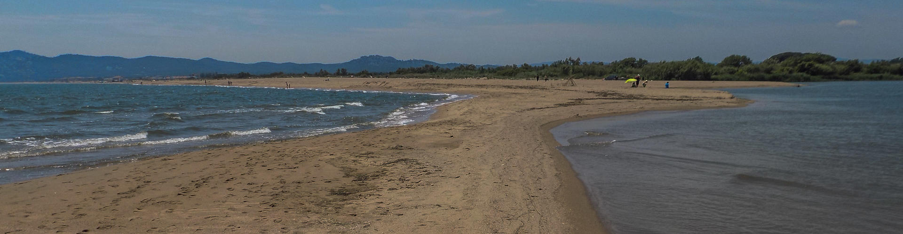

Ruta · Montgrí
La tercera etapa de la Ruta del Montgrí i el Baix Ter surt de la plaça de Catalunya de la població de Pals , també punt d’arribada de la segona etapa, per dur-nos fins a Torroella de Montgrí .…